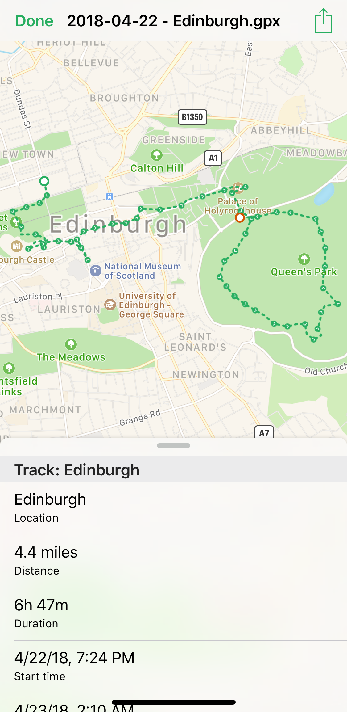

GPX Track Viewer is a tiny and simple utility app that shows tracks from GPS Exchange Format (GPX) on a map along with short track information.
Internal file browser provides a way to organize GPX files from different sources and storages directly on a device.
'View Track' action allows viewing track file in any app that supports Share Sheet Actions without switching to the GPX Track Viewer.

The app does not collect any information from its users and does not contain any ads or in-app purchases.
The app uses FloatingPanel component by Shin Yamamoto @scenee, available under the MIT license.
Icons made by Freepik from www.flaticon.com is licensed by Creative Commons BY 3.0.